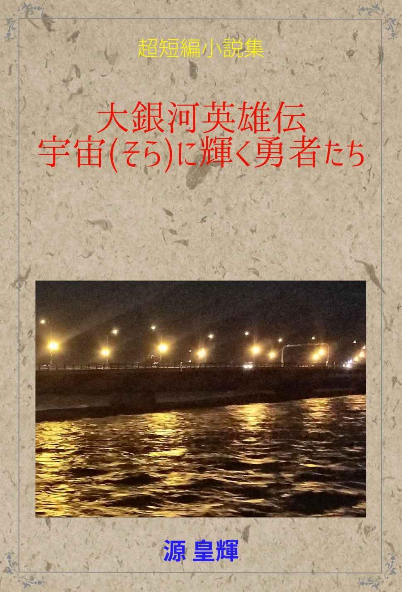

| 超短編小説集①: 大銀河英雄伝 ～宇宙(そら)に輝く勇者たち～ | |
| 源 皇輝 | |
| Novel Create Publishing (2018) | |

超短編小説集①
大銀河英雄伝
宇宙(そら)に輝く勇者たち
２０１８年６月14 日。
オーストラリア大陸ほどの大きさの小惑星が地球に向かっていた。このままでは小惑星が地球に激突して人類は滅亡してしまうだろう。このような人類滅亡の危機に対して国連が動き出した。そして世界中から各専門分野のエキスパートたちが集結して対策を話し合った。その結果、小惑星内部に核爆弾を設置して真っ二つに破壊するプロジェクトを決定したのだった。
五日後、人類を救うべく十人のエキスパートがロシアの宇宙船基地に集結。そしてプロジェクト・チームが結成された。結成後まもなく十人の「選ばれし者たち」は宇宙船で小惑星へと向かったのだった。
小惑星の破壊が成功しなければ地球は滅亡する！
全世界が「選ばれし者たち」による小惑星破壊成功を願った。そして地上から視認できるほど接近している小惑星を見つめながら祈りを捧げたのだった。
人類の最後にして唯一の希望である「選ばれし者たち」......。
やがて彼らは小惑星へ......向かうはずだった。しかし、あろうことか彼らが乗った宇宙船は目標である小惑星を通りすぎてしまったのだ。
原因は宇宙船パイロットの居眠りだった！ しかも小惑星を通りすぎたことをパイロット以外の乗組員たちも誰一人として気がつかなかったのだ。なぜなら乗組員たちはパスタの茹で具合について激論を交わしていたからだった。
地球が滅亡の危機に瀕しているというのに何と緊張感のない連中なんだろう。
結局、小惑星は地球に激突して人類は滅亡した。
そんな地球の壮絶な最期の様子を宇宙船から眺めていた「選ばれし者たち」はあまりの驚愕的な結末に半笑い状態だった。
すぐに彼らは逃げた。
新たな文明を築くため火星へ逃げた。そして火星で新たな文明を築き始めた彼らは真の意味で「選ばれし者たち」になったのだ。
おわり
東京・四谷で殺人事件が発生した。
殺人現場ではあまりの事件の不可解さに警視庁の刑事たちは頭を悩ませていた。
そのときだった。殺人現場に一人のホームレスがあらわれた。そのホームレスは汚れきった服装をしていた。そして髭は真っ白で胸元まで伸びきっておりその顔も皺だらけだった。しかしその眼光の鋭さは尋常ではなかった。それはまるで仙人のような風貌だった。
そんな仙人のような風貌のホームレスが殺人事件現場へ無断で立ち入った。そして無言のまま事件の痕跡を丹念に調べ始めた。しかしすぐに警備中の警察官がそれを制止した。
すると突然ホームレスは殺人事件に関する推理を語り始めた。それを耳にした刑事は冷ややかな表情でホームレスに言った。
「素人の戯言なんて聞いてもしょうがないんだよ。捜査の邪魔だからあっちへ行きなさい」
刑事にあしらわれたホームレスは彼を一瞥すると黙って歩き去ろうとした。
そのときだった。
歩き去ろうとするホームレスの後ろ姿を見た、たまたま現場に到着したばかりの警部が何かに気がついた。そしてすぐさまホームレスの背中に声をかけた。ホームレスは振り返った。
「もしや、あなたは！ 元警視庁警視正の......」
その警部の言葉に刑事や警察官たちが驚いたようにホームレスを注視した。そして警部の次の言葉を待った。
「警視正が通っていたおでん屋台の店主では？」
ホームレスは黙ってうなずいた。そんなホームレスを見て刑事たちは唸った。
「ただの店主かい！」
三日後、犯人が逮捕されて不可解だった殺人事件は解決した。その事件解決のきっかけとなったのはホームレスが現場で語った推理だった。
警部は、おでん屋の屋台前で事件を振り返った。
「さすがは警視正が通ったおでん屋台の元店主。まさにホームレス刑事(デカ)だな」
警部はそう呟くと、屋台ののれんをくぐって木製の長椅子に腰を掛けた。ふと隣を見るとあのホームレスが真剣な眼差しで大根のおでんを食べていた。
おわり
２０２５年、人類社会は運命管理局に支配された。
運命管理局は全人類の運命を正確に予測する。運命管理局の支配下にある各個人は二十四時間に一度、文書化された個人宛の運命予報書を受け取らなければならない。もしそれを拒めば、その者は運命管理局によって危険分子とみなされる。そして強制収容所に送られてしまうのである。
２０１８年12 月18 日７時26 分。
物部正雄は運命管理局関東支部で運命予報書を受け取った。
正雄は期待と不安を抱きながら運命予報書が入った封筒から一枚の文書を取り出した。そして食いつくように文書を読み始めた。
『午前中はタンスの角に右足の小指をぶつける』
午前中は......それだけか！ まったく、いつもながら管理局の予報は大雑把だな。
半ば呆れた正雄は、さらに午後の運命予報に目を通した。
『川村ゆかりとデートをする。そして......』
その文章を目にした正雄の目が喜びと期待で輝いた。
片想い相手のゆかりちゃんとデートができる！ 今日はなんて最高の運命日なんだ！
正雄は予報書をさらに読み進めた。
『夜はホテルで行く』
その一文を目にした正雄は意味が分からず首を傾げた。
ホテルで行く？ イクって、もしかして、ゆかりちゃんと！
正雄は今夜の運命予報の結果に驚きと喜びで目を見開くとガッツポーズをしながら天を見上げた。
やった！ ゆかりちゃんとやれる！
そう思った正雄は、このときほど運命管理局の存在に感謝したことはなかった。
運命管理局の地球支配に対する抵抗運動が世界各地で発生してるけど、やっぱり運命管理局は人類社会に必要だよな。
正雄はそんなことを考えながら帰宅した。その直後、さっそくタンスの角に右足の小指をぶつけた。
痛ってぇ、だけど午後からはゆかりちゃんとデートだからガマンガマン。
午後になると正雄のケータイに川村ゆかりから着信があった。それは突然のデートの誘いだった。そして運命予報どおりに正雄は川村ゆかりと楽しいデートをして過ごした。
やがて夜を迎えた。
正雄は川村ゆかりの手を引きながらホテルの自動ドアに向かって突き進んでいった。
その時だった。
開くはずの自動ドアがなぜか開かなかった。そのせいで正雄は激しく額をぶつけてしまった。さらにその反動で仰向けに倒れてコンクリートの地面に後頭部を強打した。
正雄は逝った。薄れゆく意識のなかで正雄は思った。
ホテルで行くって、逝くことかよ。それにしても運命管理局の予報書ってたまに誤字脱字があるんだよな......。
運命予報なんて、やっぱりいらないや。
おわり
今回の『どっきりカメラ』は、密室となった食堂に独り残された八十歳の老婆が五体のゾンビに襲われるという設定です。もちろんゾンビたちが仕掛人です。老婆はまさかゾンビに襲われるなんて夢にも思っていません。
今年八十歳になる幸代さんは非常に温和でとても良い人だと評判です。そんな幸代さんは老人会の会長さんから彼女が大好きな玉子焼きをごちそうになることになりました。さっそく幸代さんは嬉しそうな表情を浮かべながら近所の公民館にやってきました。そして玉子焼きが用意されている食堂へと入っていきました。幸代さんが食堂に入ってドアを閉めたとき食堂ドアの外側から施錠されたことを彼女は知るよしもありませんでした。幸代さんはゆっくりと歩きながらテーブル席に腰を下ろしました。
幸代さんはテーブルの上に置かれた皿に玉子焼きがあることに気がつくと満面の笑みを浮かべました。そして皿の側には白い置き手紙がありました。幸代さんはそれを手に取ると穏やか笑みを浮かべながら読み始めました。
『幸代さんが大好きな玉子焼きです。幸代さん、いつもありがとう。どうぞお召しあがりください......老人会会長より』
手紙を読み終えた幸代さんは感謝の気持ちを抱きながら目を閉じて合掌すると箸を取りました。
その時でした。突然ガチャリと音がすると同時に幸代さんから見て正面にあるドアが勢いよく開きました。そして設定どおりに五体のゾンビが順々に現れたのです。もちろんゾンビたちは特殊メイクで変装した仕掛人である番組スタッフたちです。
突然現れたゾンビに幸代さんは驚いて目を丸くしました。五体のゾンビは幸代さんを驚かそうとテーブルに群がり始めました。そのとき、一体のゾンビがテーブルに上がると玉子焼きが置かれた皿を蹴散らしてしまいました。床に落ちた皿は割れて玉子焼きは無惨にもゾンビたちに踏み潰されてしまいました。
パンパンパンパンパン！
突然、乾いた音が食堂に響き渡りました。その後、幸代さんは施錠されていたはずの食堂ドアをいとも簡単に開けると何も言わずに去っていきました。瞬く間に沈静化した食堂には五人のゾンビ役スタッフが倒れていました。そしてテーブルの上には銃口からほのかに白い煙を立ち上がらせた黒光りする拳銃が置かれていたのでした。
壮絶どっきりカメラ......その結末は番組スタッフ五名の死亡。仕掛人たち番組関係者にとっては〝壮絶どっきり〟になったのでした。
番組関係者の一人はテーブルの上に残された拳銃を呆然と見つめながら呟きました。
「あの婆さん、何なんや......」
おわり
宇宙(そら)に輝く勇者たち
登場人物
【ラインハルト・オルディアス】男性
かつてアルティリア大陸全域を支配したアストランダ連邦王国・オルディアス王朝家の末裔。オルディアス王家の血統には「神託の霊力」が宿るとされる。オルディアス家の長男として生まれたラインハルトは剣技に優れており「神託の霊力」を駆使して白魔法を操ることができる。
【ネルフィス・アルムンゼンド】男性
アルティリア王立魔術アカデミーを首席で卒業した魔術師。アルムンゼンド家は古来より由緒ある魔貴族であり、かの伝説の大魔術師エルフィルの子孫と言われている。宇宙の光源から派生した「ゼリア」の秘法を取得しており、アルティリア大陸においてはネルフィスの魔力は最強だと言われている。
【リネ＝ミラ】女性
エルフの上位種族であるハイエルフの精霊術師。すでに千年の時を生きているがその容貌は美しく若々しい。この世のあらゆる精霊を支配、制御することができるほどの霊力を備えている。ラインハルトに命を救われて以来、彼と行動を共にしている。しかしラインハルトの魅力に惹かれつつある自分をハイエルフの掟に逆らうものとして抵抗している。
【チャット・グラスドナルド】男性
ホビット族の盗賊。ラインハルトが持つ聖剣を盗もうとして捕まり、それ以来彼に従うようになった。非常に敏捷で手先が器用なためラインハルト一行に大きな貢献をすることになる。歌が好きで陽気な性格ではあるが、幼少の頃にさらわれた弟を思い出すたびに悲しげな表情を見せる。
【グァンダ・エドロト】男性
ドワーフ族の戦士。奴隷船で苦役を受けていたところをラインハルトに救われた。そんなラインハルトに王者の風格を見出だしたグァンダは彼に忠誠を誓うようになった。ドワーフ王デルダドから授与されたダイヤモンドアックスを武器にしている。戦いにおいては常に先陣を切って戦う。
【アマンサ・セルミード】女性
人間とエルフの間に生まれたハーフエルフ。多才な能力を備えており、優れた剣技だけでなく精霊魔法や黒魔法、白魔法を駆使することができる。しかし波乱な幼少時代を過ごしたせいか寡黙でめったに話さない。しかしラインハルトには心を開いている。一方でハイエルフのリネに対しては憎悪を抱いている。
漆黒のクリスタルが災いの闇を放つリブロンドの宮殿にたどり着いたラインハルトたち六人。宮殿大広間の玉座で待ち構えていたのは〝邪神アラガム〟の力を使って大陸支配を目論む大魔道師ネイスメイスだった。
ネイスメイスはラインハルトたちを一瞥すると高らかな笑い声をあげた。そしてその低いしわがれ声を大広間に響き渡らせた。
「ラインハルト、わしはお前の旅立つ姿を見ておったが、あのときはたいそう貧相な装いじゃったのう。しかし今では豪勢な鎧や剣で身なりを整えておる。だが実力の方はどうかな？」
玉座から立ち上がったネイスメイスに鋭い眼差しを向けたラインハルトは聖剣を鞘から引き抜くと身構えた。
「ネイスメイス、お前の野望は俺たちが阻止する！ 今こそお前を倒してアルティリアに平和の光を取り戻すのだ！」
ラインハルトが勇壮な声でそう叫ぶと、ネルフィスは竜牙の杖を、リネは光り輝くセルンの杖を、チャットは両手にミスリルのダガーを、グァンダはダイヤモンドアックスを、アマンサはフレイムスピアを構えた。
「アルティリア最後の希望がお前たちか。それも今すぐ絶望に変わる」
ネイスメイスは笑いながらそう言うと暗黒のローブから伸ばした両手を高く掲げた。
「究極の暗黒魔法、スーパーノヴァ！」
ネイスメイスがそう叫んだ瞬間、上空を包む闇夜に突如、光の球体が現れた。やがてそれは次第に巨大化していく。まもなくそれは太陽の如く明るさを放ち、周辺はまるで昼間のように明るくなった。ネイスメイスが作り出した光の球体はさらに膨張していく。それを見上げていたラインハルトたちの心に不安が広がった。
「ネイスメイス、あの光の球体をどこまで巨大化させるつもりだ？」
ラインハルトは両手を掲げ続けるネイスメイスに訊ねた。
「わしにも分からん」
ネイスメイスは動揺した表情で答えた。
「分からんとはどういうことじゃ？」
ドワーフのグァンダが大声で訊ねた。
「この魔法は初めて使ってみたのじゃ」
ネイスメイスがそう答える間にも上空の球体はさらに輝き、そして熱くなっていく。やがて上空の光の球体は目視できる太陽の数千倍の大きさにまで膨張して大空を覆うまでになった。そしてそれはゆっくりと地上に向けて落下し始めた。
「やめろ、ネイスメイス！ このままでは俺たちだけでなくお前も吹き飛ぶぞ！」
ラインハルトが叫んだ。
「あかん！ もうわしにもどうにもできんのじゃ！ 両腕が疲れてきたわい」
「ネイスメイス、もしあの巨大な光の球体が地上に落下したらどうなるんだ？」
ラインハルトは汗をかきながら大声で訊ねた。
「たぶん、この惑星が消滅する」
「なんだと？ 何とかしろ！」
「もうわしも分からんのじゃ！ ラインハルト、助けてくれ！」
「ふざけんな、ネイスメイス！ こっちこそ助けてくれだよ！」
ラインハルトは悲痛な叫び声をあげた。
「うわー、ネイスメイスを倒したら『悦び通り』のマッサージ屋でメルちゃんのマッサージを受けるつもりだったのに、こんなところで死にたくないよー！」
突然、魔術師のネルフィスが泣き叫んだ。
「ラインハルト、ごめんなさい。昨日の貴方からのプロポーズの答えだけど、やっぱり拒否するわ。本当は私、ネルフィスが好きだったの！」
ハイエルフのリネがラインハルトに向かって叫んだ。
「いま、それを言うかよ！ 俺、死ぬ直前に失恋かよ！ うわーん！」
ラインハルトは泣き叫んだ。
「ごめん、みんな。みんなは僕のことを弟思いで優しい奴だと言ってくれていたけれど、実は小さい頃に蜂蜜クッキーを食べたくて弟を売ったんだよ。今まで騙していてごめんなさい」
ホビットのチャットが笑いながら叫んだ。
「チャット、お前は素直な奴じゃ。だったらわしも真実を話そう。実はわしはドワーフじゃないのじゃ！ 人間なんじゃ！ 背が低くて太ってるからドワーフだと嘘をついていたんじゃ！ ドワーフだと言っておけば周りは珍しそうに見てくれるからの」
ドワーフのグァンダが照れ笑いを浮かべながら叫んだ。
「何なんだよ、お前らよ！ ネイスメイスは自分が作り出した光の球体をコントロールできずに墓穴掘っていやがるわ、ラインハルトはリネにプロポーズを断られて泣きじゃくっているわ、ネルフィスは死ぬ直前までマッサージ屋の娘のことばかり考えているわ、チャットは何で今になって真実を話すんだよ！ 黙っていれば弟思いの優しいホビットのままで死ねたじゃねーかよ！ 少しは考えろよ、このボケ！ そしてグァンダ。お前、人間だったんか！ だからよく私の尻ばかり触っていたのか！ このエロジジイ！ こうしてくれるわ！」
寡黙のはずだったハーフエルフのアマンサは早口でまくし立てると元ドワーフであるグァンダの喉元をフレイムスピアで貫いた。グァンダは即死した。
「物静かで大人しいアマンサが......」
チャットは目の前で死んでいる元ドワーフのグァンダを呆然と見ながら呟いた。
「そんなことよりネイスメイス！ マジで何とかしろ！ 太陽みたいになって地上に落ちてきたぞ！ 俺、まだ死にたくないよ！ アマンサ、リネにフラれたから代わりに結婚してくれ！ 独身のまま死にたくない！」
「うん、いいよ」
突如、ラインハルトとアマンサの婚約が成立した。
「こんな魔法を使って死ぬくらいなら世界征服なんて考えなきゃ良かったわい！ 助けて、ママー！」
ネイスメイスがしわがれ声で泣き叫んだ。
ネイスメイスが作り出した巨大な球体は突如、超新星爆発を起こした。その瞬間、ラインハルトたちのみならず、アルティリア大陸、いや世界、いや惑星、いや数個の銀河が超新星爆発に呑み込まれて蒸発した。
こうしてラインハルトたちは宇宙(そら)に輝く勇者となったのだ！
おわり
超短編小説集①
大銀河英雄伝
宇宙(そら)に輝く勇者たち
二○十八年十一月三日 初版
著者・源 皇輝
出版・ＮＣ出版